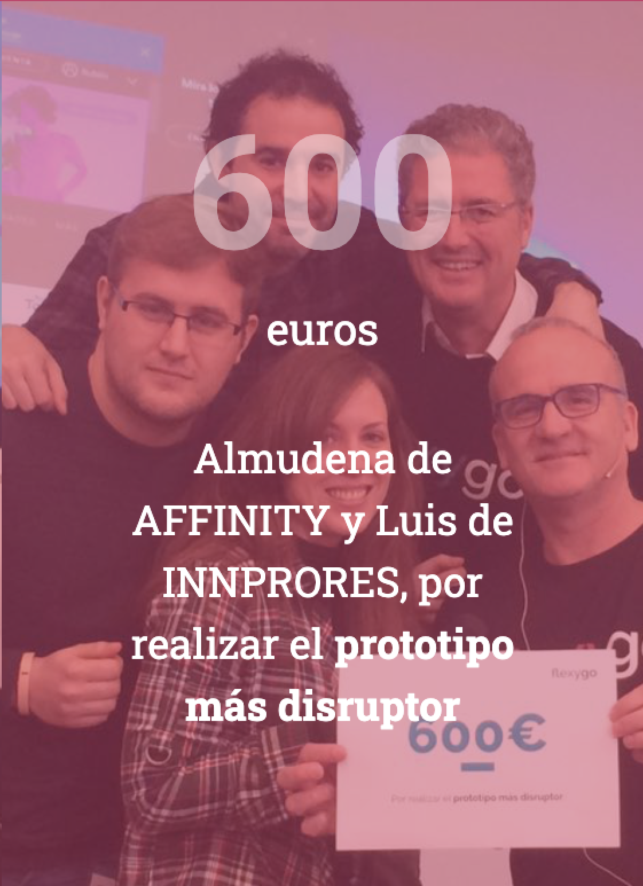
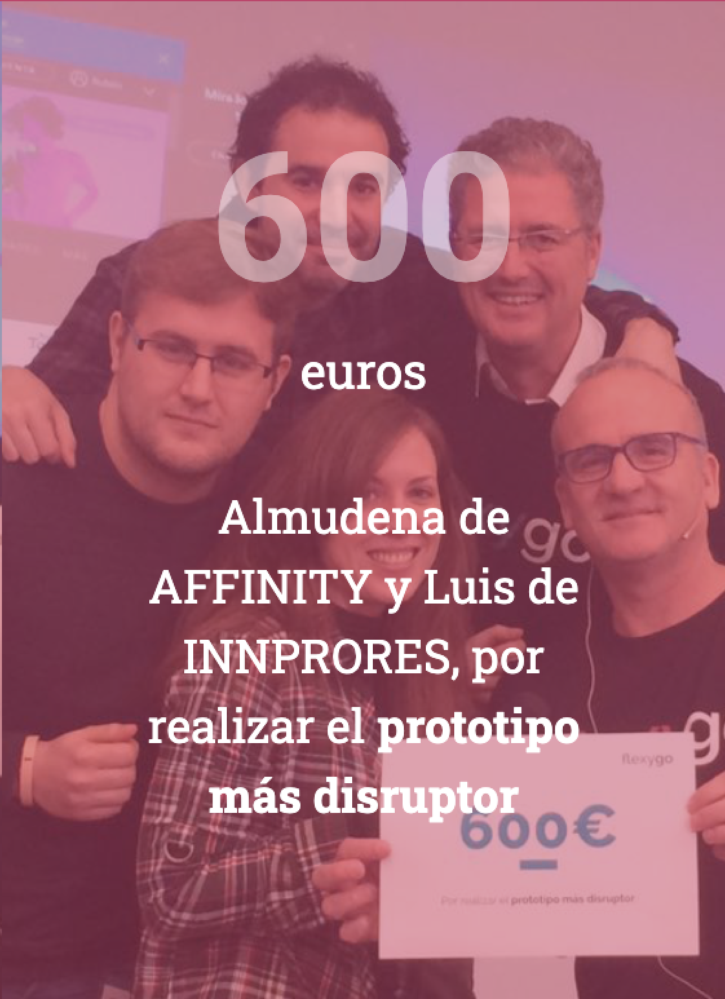

Luis
Domínguez
López
Ingeniero Informático
Datos de Contacto
Mail: domlopluis@gmail.comLinkedin: luisdominguezlopezinformatico
GitHub: domlopluis94
Instagram: @luisdomlop94
- TFM Sobre creación un "Development of firmware for intelligent Internet of things enabled devices." por el cual me calificaron con 10 Matricula de Honor.
- Asignaturas y Seminarios orientados a la seguridad, desarrollo riguroso del software y al Data Mining.
- Delegado de Curso y de Titulación.
- Proyectos públicos de Data Mining y de Seguridad Informática.Trabajos resultado de las distintas asignaturas disponibles en mi GitHub.
- Master con mas del 90% de asignaturas cursadas en ingles. Y 3 Matriculas de Honor.
- TFG con 9,8 sobresaliente sobre la "Creación y personalización de ROM de Android orientado a uso en comercios y empresas", por el cual me calificaron con 9,8 sobresaliente.
- Matrícula de Honor en Web of Linked Data and Semantic Web y Español Profesional y Académico
- Adquisición de conocimientos en Java, Android, HTML, CSS, JavaScript, C, Ensamblador, Python, Prolog... con proyectos disponibles en GitHub
- Participación en el equipo de Rugby de la Universidad
- Complementado con la Educación Secundaria Obligatoria realizada en el colegio bilingüe Trinity College Liceo Serrano y St. Michael's School en primaria
Noviembre 2019 - Actualidad
- Desarrollo del middleware en C++ para un dispositivo Enocean, en relación al tratamiento de paquetes de radio frecuencia.
- Desarrollo de una interfaz para Operwrt con Luci y Lua ( además de html,css y js ) para un dispositivo Mipsel.
- Conocimientos en programación de microcontroladores (C/C++).
- Conocimientos generales de electrónica analógica y digital.
- Validación y Testeo de software: pruebas unitarias y de sistema.
- Manejo en herramientas de control de versiones (Git).
- Generación de documentación para su uso , mantenimiento y adaptación a otros dispositivos.
- Trabajo en coordinación con diferentes áreas de la empresa, especialmente con el equipo de desarrollo de hardware.
- Lenguajes de programación: C/C++,Lua, Python , JS
Febrero 2019 - Octubre 2019
- Desarrollo completo de la aplicación de ÑÑ para dispositivos móviles, usando Cordova, Angular e ionic. ademas desarrolle plug-in para Cordova disponibles en mi Github.
- Desarrollo de la aplicación ÑÑ y Hotflix para las plataformas de Samsung y LG. Trabaje con HTML,CSS, Jquery, JS , Tizen Os y LG Web Os.
- Desarrollo en Roku las aplicaciones para Ñam, Tuingles y Escapa Tv. Tanto por publicación directa como con Brightscript.
- Desarrollo de la aplicación de Hotflix para dispositivos móviles. Desarrollando un reproductor personalizado con Exoplayer para Smooth Streaming.
Septiembre 2018 - Diciembre 2018
- Realicé prácticas curriculares desarrollando un launcher para Android
- Planifiqué las etapas del proyecto
- Realicé informes de las etapas de desarrollo y el propio desarrollo del sistema
- Desarrollé aplicaciones de escritorio de Windows y participé en el campus de FlexyGO, obteniendo el primer puesto gracias al prototipo más disruptor
- Adquiriendo conocimientos en C#, HTML, CSS, JavaScript y de las herramientas Flexygo y Visual Studio
El evento CLIMATHON está principalmente centrado en crear conciencia sobre los efectos de la contaminación lumínica. Centrado en el desperdicio de energía y dinero, el efecto del ciclo de día natural de algunas especies y el efecto producido en el bienestar y la salud humana a través de su asociación con el insomnio, entre otros.
Durante el día del evento propuse el desarrollo de una aplicación para la concienciación de las personas en materia de contaminación lumínica.
- Premio por realizar una aplicación web sobre almacenes son uso de JavaScript para adaptarlo a dispositivos móviles con la técnica drag and drop
- http://flexygo.es/flexygo-campus-party/
 

Actualmente tengo la licencia de desarrollador Android de Google PLay con una aplicación disponible para su descarga, "Tablecoin", y dos más en fase de desarrollo. Además también me hallo en formación de Unity con la intención de poder desarrollar más aplicaciones en el futuro.
Aprender y crecer profesionalmente en el sector de las tecnologías de la información. Soy trabajador y sociable. Me entretengo al máximo en mis trabajos y mis objetivos. Sé llevar las riendas de un equipo y las responsabilidades.
| Nombre | Fecha del primer proyecto realizado | Comentario | Nivel |
|---|---|---|---|
| C/C++ | 2013 | Tanto profesionalmente durante mi etapa en la UPM , como academicamente en el Grado y el Master | Alto |
| Java | 2012 | Java con Eclipse, Android Studio | Alto |
| JavaScript | 2018 | En todo tipo de trabajos tanto profesionales como acedemicos. | Alto |
| Prolog | 2015 | Trabajos de Master y de Grado con alta puntuación | Alto |
| Python | 2016 | Tanto con DJango como para trabajos de Data Mining | Medio-Alto |
| LUA | 2016 | Trabajos profesionales durante mi etapa trabajando para la UPM y en mi TFM | Medio-Alto |
| C# | 2015 | Trabajos para la empresa innprores | Medio |
| Ensamblador M88110 | 2014 | Trabajos Universitarios | Medio-Bajo |
| Bash | 2014 | Trabajos Universitarios y para mayor comodidad en el desarrollo | Medio |
| PHP | 2019 | Ayuda en un plug-in para wordpress | Bajo |
| R | 2019 | Apoyo en trabajos de Data Mining | Bajo |
| Kotlin | 2019 | Pruebas simples para testear el lenguaje | Bajo |
| Objective-C | 2016 | trabajado como parte muy por encima de mi plug-in para cordova | Bajo |
| Nombre | Fecha del primer proyecto realizado | Comentario | Nivel |
|---|---|---|---|
| Angular JS | 2019 | Principalmente para el desarrollo de aplicaciones | Medio |
| Spring | 2018 | Para el desarrollo de una API en Britel | Medio |
| Ionic/Bootstrap | 2014 | Principalmente para aplicaciones centradas en dispositivos moviles, pero tambien en todos mis trabajos web. | Alto |
| Django | 2016 | Trabajos de Master y de Grado con alta puntuación | Medio-Alto |
| Apache Cordova | 2019 | Tanto con DJango como para trabajos de Data Mining | Medio-Alto |
| Flexy Go | 2016-2017 | Trabajos para Innprores | Medio |
| Nombre | Fecha del primer proyecto realizado | Comentario | Nivel |
|---|---|---|---|
| SQlite | 2013 | Android y para dispositivos IOT | Alto |
| MySQL | 2012 | Trabajos Universitarios | Alto |
| Sparql for RDF | 2018 | Matricula de Honor en Web semántica gracias a la adaptación de Sparql a Android. | Alto |
| PostgreSQL | 2015 | Académicos para trabajos sobre SIG en la WEB | Bajo |